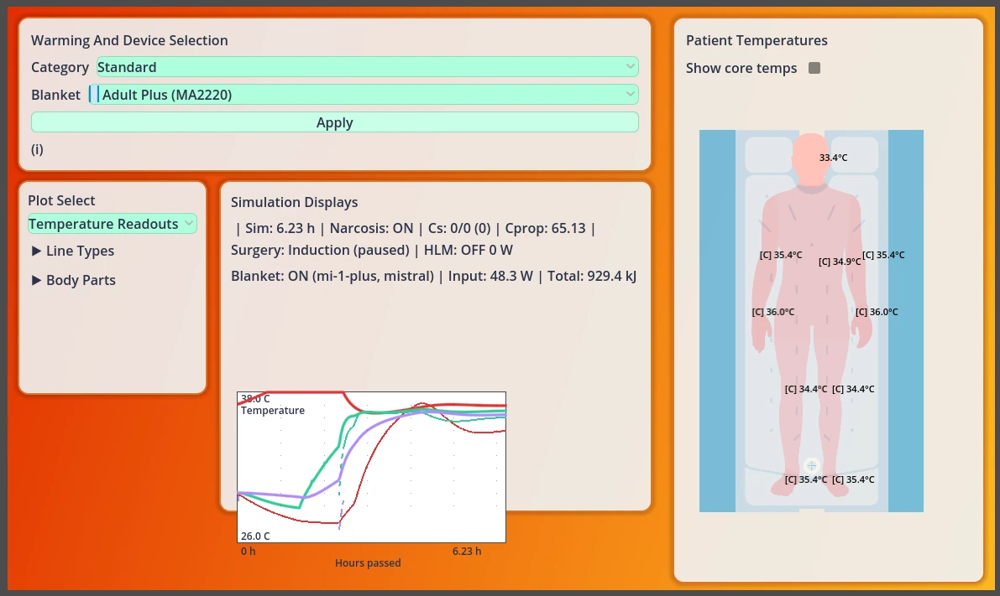
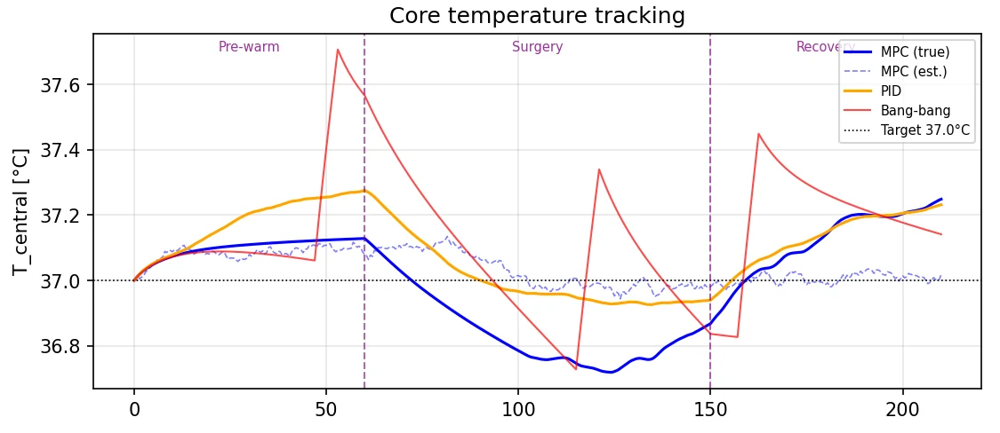
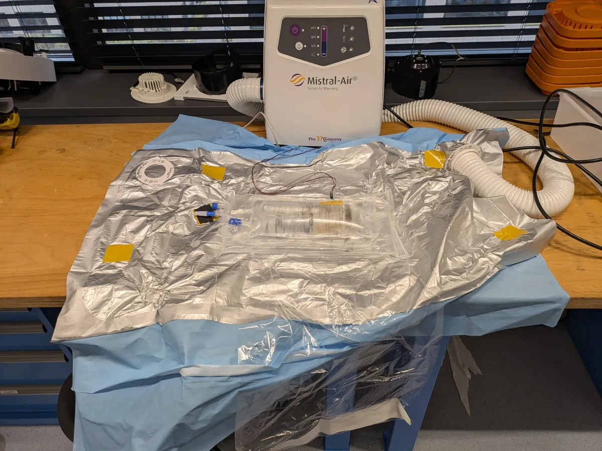

R&D internship · TSC Life Sciences · Feb–May 2026 · graded 8/10
Closed-loop temperature control for a surgical warming blanket
For my MSc Biorobotics internship (University of Twente) I gave the Mistral-Air MA1200 a sense of the patient. The MA1200 keeps patients warm during surgery by blowing warm air through an inflatable blanket, but it blows at a fixed temperature, however warm the patient already is. I built a controller that responds to the patient's skin temperature and got it running on the device itself.
- σ 0.03 °C outlet-air stability during a 3-hour closed-loop run on the device
- 0.05 °C RMS error of my linearised 23-state patient model against the full non-linear one
- 8/10 final grade for the internship

The problem
Between 40% and 70% of adults under general anaesthesia become hypothermic during surgery. Anaesthesia alone drops core temperature by 0.5–1.5 °C in the first half hour, as warmth redistributes from the trunk to the limbs.
Forced-air warming counters this, but the MA1200 runs open loop: the nurse picks an outlet temperature (38 or 43 °C) and the airflow stays constant. The device never learns how warm the patient is, which wastes energy and makes overheating the skin more likely. My brief was a proof-of-concept closed-loop controller, with one hard constraint: keep the one-button interface.
What I built
A patient model
I implemented a 23-state thermal model of a patient based on the Fiala thermoregulation model: central core, trunk, head, arms, legs, hands and feet, plus the supply hose, the blanket and the anaesthetic (propofol) concentration. Linearised, it stays within 0.05 °C RMS of the full non-linear model. Its time constants span five decades. Skin reacts within 1–5 minutes; core temperature takes about 50.
A patient simulator
I wrapped the model in an interactive Godot app (shown above) to try scenarios: anaesthesia on or off, different blankets, extra heat from a heart-lung machine. It made the model's behaviour visible to colleagues who would never read the equations.
A two-loop controller
Because the skin responds about 29 times faster than the core, the controller is a cascade. A fast inner loop sets the fan speed from two skin thermistors. A slow outer loop estimates core temperature and shifts the skin setpoint. Both run on top of the device's existing heater loop, which keeps the outlet air at a set temperature.
Hardware and firmware
I fitted two NTC thermistors to an MA1200, extended its firmware to read them and run the controller, and flashed it onto the device. Anything that touches a patient needs galvanic isolation, so I also designed an isolated dual-thermistor front-end for IEC 60601-1 Type BF (2× MOPP, 4000 V AC isolation).
Results
In simulation: my MPC against the PID
I built a model predictive controller on the linearised patient model and benchmarked it against the cascade PID through a full simulated surgery: pre-warming, anaesthesia and recovery. The PID kept core temperature within 0.3 °C of target, with roughly half the tracking error of bang-bang control. The MPC did no better unless it was told when anaesthesia started, so I chose cascade PID: it is simpler, and it fits the existing platform.

On the bench
The test patient was a 2-litre water bag on an underblanket, the thermal load that IEC 60601-2-35 (Annex CC) specifies for testing heating blankets, with four extra loggers for independent validation. In a 182-minute closed-loop run, both skin sensors settled at the 37 °C setpoint without overshoot, and the outlet air held at 45.00 °C with a standard deviation of 0.03 °C. As the dummy neared the setpoint, the controller throttled the heater back; the warm-up itself still needs close to full power.

What I left out, on purpose
I didn't implement direct core-temperature measurement: the invasive options carry a regulatory burden out of proportion to a proof of concept. I also didn't build adaptive control. The dominant disturbance is the sudden shock of anaesthesia, and an estimator that first has to learn new parameters adds little on that timescale.
What I learned
- You can't read the core from the skin quickly. A Kalman–Bucy filter analysis showed that with skin sensors alone, the core-temperature estimate takes about 150 minutes to become reliable. Steering on core temperature properly needs a direct core measurement.
- A well-tuned PID is hard to beat without information. MPC is only as good as what it knows about the patient. Without a signal for when anaesthesia starts, its patient model is effectively a pile of tuning parameters, and it did no better than the PID.
- Fix the measurement protocol before measuring. I didn't lock down the water-bag protocol before starting, so those measurements are less sharp than they should be, and the extra measurement days to tighten them never happened. It's the first thing I'd change.
All measurements were made on a water-bag test setup, not on patients, with the protocol limitation described above. This is a proof of concept, not a certified medical device.